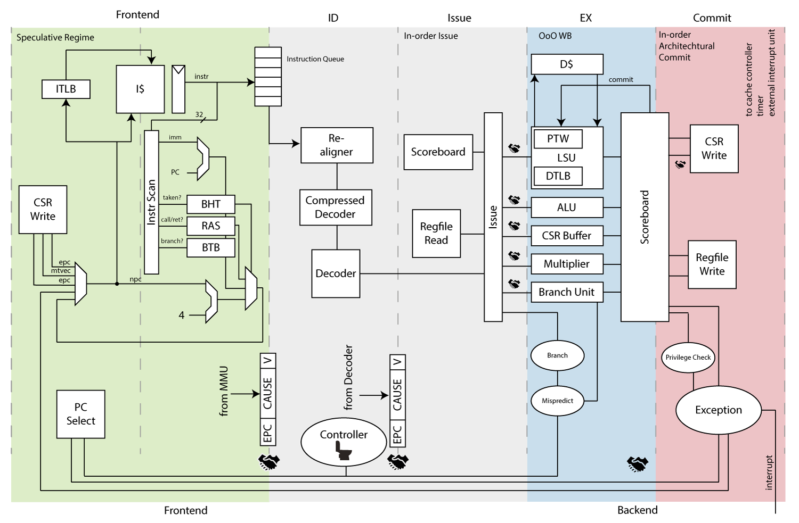

[RISC-V Architecture Training] Computer Architecture with RISC-V Examples
Computer architecture basics
Pipeline / Parallelism / Cache
Three ultimate mechanisms to imporve performance/power
Computer architecture basics / pipeline

IF = Instruction Fetch, ID = Instruction Decode, EX = Execute, MEM = Memory access, WB = Register write back).
Computer architecture basics / pipeline
@DEMO
Pipeline simulator: https://github.com/mortbopet/Ripes
Computer architecture basics / pipeline
Motivation
- Most of the work cannot be done at the same time.
- To use the logic more efficiently
- Less work per stage, higher clock frequency
Brings in problems: hazards
- Data hazard
- Dependency
mv x1, x2
add x4, x1, x3
sd x4, 0(x5)
- Control hazard
- Jump and branch
addi x1, x1, 1
subi x2, x1, 100
bnez x2, 0(x3)
.co-4[
- Structure hazard
- Multi-cycle multiplier
mul x1, x2, x3
mul x4, x5, x6
mul x7, x8, x9
Computer architecture basics / pipeline
Other considerations
- Exception and interrupt
- Flush pipeline
- Atomic operations
- …
Improvements
- Deeper pipeline
- Higher frequence, higher power
- Mostly for CISC machines
- Branch prediction
- Reduce branch penalty
Branch prediction
-
BTB (branch target buffer)
- Store the target PC
-
BHT (branch history table)
- Store taken or non-taken history
-
RAS (return address stack)
- Call stack history address
-
Flush if prediction is wrong. Waste power
Computer architecture basics / parallelism
Parallelism
ILP (instruction-level parallelism) & TLP (thread-level parallelism)
- Multi-issue
- SMT (simultaneous multi-threading)
- VLIW (very long instruction word)
- SIMD (single instruction multiple data)
- Out-of-order
- …
Computer architecture basics / parallelism
Multi-issue (a.k.a superscala)
- Issue multiple instructions parallelly to reuse CPU resource
- With minimum extra control logic to reuse execution logic
Computer Architecture Basics / parallelism
VLIW (very long instruction word)
- Compiler defined parallelism to reuse CPU resource
- Pack mutiple instructions into one long instruction

Computer architecture basics / parallelism
SIMD (single instruction multiple data)
- Vectorization
- Graphics & machine learning
- Large register file becomes bottleneck
Computer architecture basics / parallelism
OOO (out-of-order)
- Issue instructions not following the program order to resolve dependencies
- Register renaming, reorder buffer, etc…
- Transparent to software
Example
addi x1, x1, 1
ld x2, 0(x1) # if cache miss, will be slow
add x3, x3, 4
ld x4, 0(x3) # if cache miss, will be slow
mul x5, x5, x6 # multi-cycle operations
- But these slow operations don’t have dependency with each other
- Therefore we can issue
mulwhile waiting for the firstld - But commit in order
- Therefore we can issue
Computer architecture basics / parallelism
SMT (simultaneous multi-threading)
- Different from temporal multi-threading (aka super-threading).
- Different program/thread reuse CPU resource
- Usually separated register files and CSRs, but use common execution units, cache and TLB
- RISC-V hart (hardware thread)
- Need compiler/OS’s help to explore thread-level parallelism
Computer architecture basics / cache
Main memory: DRAM (dynamic random-access memory)
-
Dynamic vs. static
- One-bit = one capacitor + one resistor
- The capacitor needs periodical rewrites (refresh) to keep its data. So it’s called dynamic
- Much smaller in size; volatile (lose power lose data)
- One-bit = one capacitor + one resistor
-
Parallel read/write a whole row
- Use SRAM as buffer to speed up random access
-
Rank: another level of parallelism
- A set of DRAM chips with the same chip select
-
SDRAM (synchronous DRAM)
- With clock: DDR (double data rate)
-
Bandwidth
- LPDDR4-3200 MT/s * 16-bit/channel * 2-channel = 12.8 GB/s
- DDR5-6400 MT/s, total 64GB/s
-
The access time
- ~100ns: too long for modern pipeline
Hierarchical cache is created to improve the latency and throughput for memory access.
Computer architecture basics / cache
What is cache?

- Index and tag
- Assuming total memory has 16-entry of data, address is 4-bit. But cache has only 4-entry of data, its address (called index) is 2-bit. Then we need to save the other 2-bit as tag in the cache.
Computer architecture basics / cache
Cache types
- Direct mapped cache
- Fixed position given the address
- Fully associated cache
- Cache entry can go anywhere, need to compare every entries to find a match
- Way associated cache
- Given address can go into different ways
Computer architecture basics / cache
Problems
- Cache coherence
- Copies of data in the whole system
- Read is OK, but write causes coherency problem
- Self-modification code in Harvard architecture
- Need a special instruction to invalidate instruction cache
RocketChip
CPU complex generator from UCB
The very first RISC-V CPU
RocketChip / core
Open source. Written in Chisel. Highly configurable!
- 5-stage pipeline
- In-order single-issue
- Branch prediction
- BTB (branch target buffer)
- BHT (branch history table)
- RAS (return address stack)
- MMU (memory management unit)
- Non-blocking data cache
- Floating-point unit
Rocket Chip / generator
Beyond a CPU core
- Network fabric + cache + IOs
- Configuration + automatic generation
Based on Rocket Chip Generator, SiFive builds up its 3/5 series CPUs.
.footnote[!(The Rocket Chip Generator (techical report from UCB/EECS))[https://www2.eecs.berkeley.edu/Pubs/TechRpts/2016/EECS-2016-17.pdf]]
SiFive CoreDesigner
@DEMO
Snapshots from SiFive
BOOM (Berkeley out-of-oder machine)
Based on Rochet Chip Generator
- From the same UCB department
- Out-of-order
- Superscalar: multi-issue and can be configured
BOOM / regfile challenges
Multi-issue architecture’s bottleneck is the register file
- Number of ports blows up the size
- 4-issue = 4-write + 8-read ports
- Congestion in physical design
.footnote[!(BOOM v2: an open-source out-of-order RISC-V core (techical report from UCB/EECS))[https://www2.eecs.berkeley.edu/Pubs/TechRpts/2017/EECS-2017-157.pdf]]
Ariane (PULP from ETH Zurich)

Ariane
Fetch stage
- Branch prediction
- BHT + RAS + BTB
- FIFO to hold the info goes into I$
- To decouple the delay of I$
- FIFO to the next stage
- To decouple front-end and back-end
Decode stage
- Includes RVC (compressed instruction) decoding
Issue stage
- Resolve branch
- Keep scoreboard
Ariane
Execution stage
- Store buffer
- Speculative vs. commit
- CSR buffer
- For speculative operation
Commit stage
- Golden rule: no other pipeline stage is allowed to update the architecture state under any circumstances.
Computer architecture advanced topics
Cache coherence
Cache coherence
What is the problem?
- 2 CPUs are trying to access to the same memory address
- Both of them have cache
- CPU-0 read, modify; then CPU-1 read, modify
- With cache, CPU-1 won’t read the latest data that CPU-0 produced
- Because the lasted copy is in CPU-0’s cache
Software vs. hardware
- Software managed coherency
- What needs to be done?
- Clean or flush dirty data, and invalidate old data
- Challenges
- Software complexity
- Hard to debug multiple CPU system
- Cache clearning and invalidation must be done at the right time, and coordinates between multiple masters
- Hard to debug multiple CPU system
- Performance and power
- How to work out which data needs to be maintained?
- And if it has more dirty data, software coherency takes longer to clearn and invalidate than hardware coherency
- Software complexity
- What needs to be done?
Hardware managed coherency
- Snooping
- Every cache maintain its own cache state (shared or not)
- When need to write to a shared cache, tell other caches
- Snooping message
- Directory
- Centralized directory: cache state
- All requests go through the directory
- Modern design: a combined snooping and directory
- Local snooping, global directory
Write options
- Write invalidate
- Write update
Snoop filter
- A directory to hold local cache info, to filter out snoop message
Status of the cache block
- MSI (modified/shared/invalid)
- MESI (add exclusive)
Summary
CPU pipeline
- IF/ID/EX/MEM/WB
- Data/control/structure hazards
Use parallelism to improve performance
- Multi-issue
- VLIW/SIMD
- OOO
- SMT
Use cache to improve memory access latency and bandwidth
RocketChip
- Text-book 5-stage pipeline
- SiFive CoreDesigner
BOOMv2
- Berkeley out-of-order machine
Ariane
- Modern pipeline design
- SystemVerilog
Cache coherency
- Software vs. hardware
- Hardware: snooping vs. directory